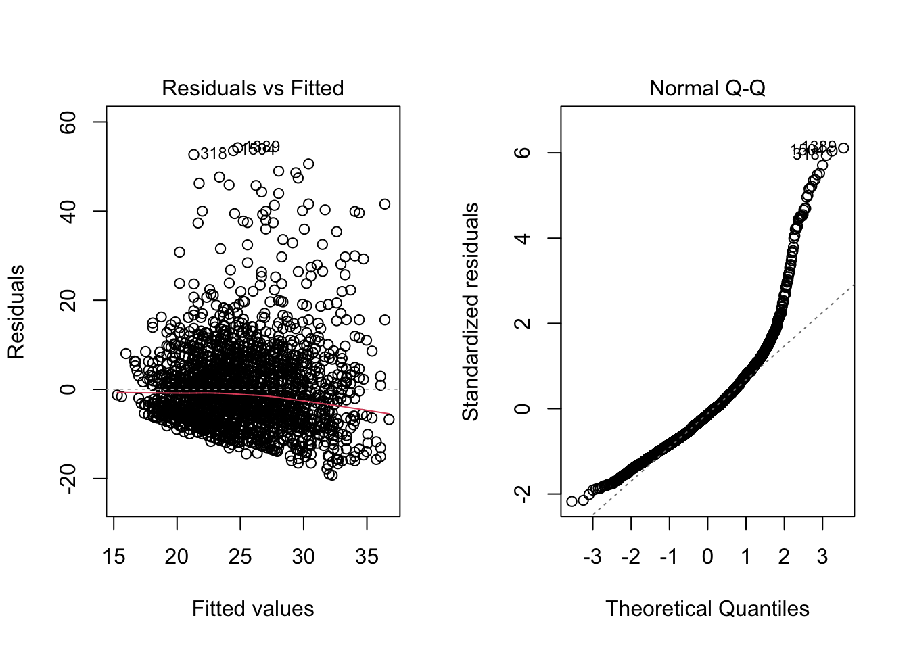

2.8 Predicted values and residuals
The lm function also returns the residuals \(e_i\) and the predicted values \(\widehat{Y_i}\), which we can access using the $ operator.These will be useful later on for computing R-squared. For now we will just plot the two values to show that the predicted values and the residuals are uncorrelated, which was discussed in class.
yhat <- mod$fitted.values
res <- mod$resid
# In OLS, the predicted values and the residuals are uncorrelated:
plot(yhat, res, col = "#4B9CD3")
cor(yhat, res)## [1] -2.4e-16